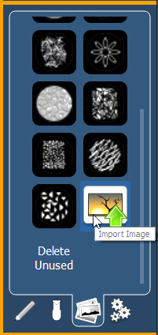

Images from the third tab can be imported into magic sheets for two different purposes. They can be used as background images or as icons.
You can use a graphics image file as a background or icon. The following is a list of accepted image formats: .bmp, .gif, .ico, .jpg, .pbm, .pgm, .png, .ppm, .svg, .svgz, .tga, .tiff, .xbm, and .xpm. The maximum image size allowed is 1920 x 1920. Larger images will be scaled to this size.

You will need to have the images on a USB drive to import them into the desk.
Once an image has been imported, it is saved with the show file.
To import an image:
Click on an image to select it. To use as an icon, drag and drop the image onto the magic sheet. You will be able to resize it. See Editing Objects on the Magic Sheet .
Background images need to be set in the background settings tab. You can also adjust the background settings there. See Background Settings .
Unused images that have been previously imported can be deleted from the console by clicking on the {Delete Unused} button.
A message will appear letting you know that "This action will close and save all Magic Sheets open for edit, then delete all unused Magic Sheet images."Select {Ok} to delete images or {Cancel} to exit out of this option.